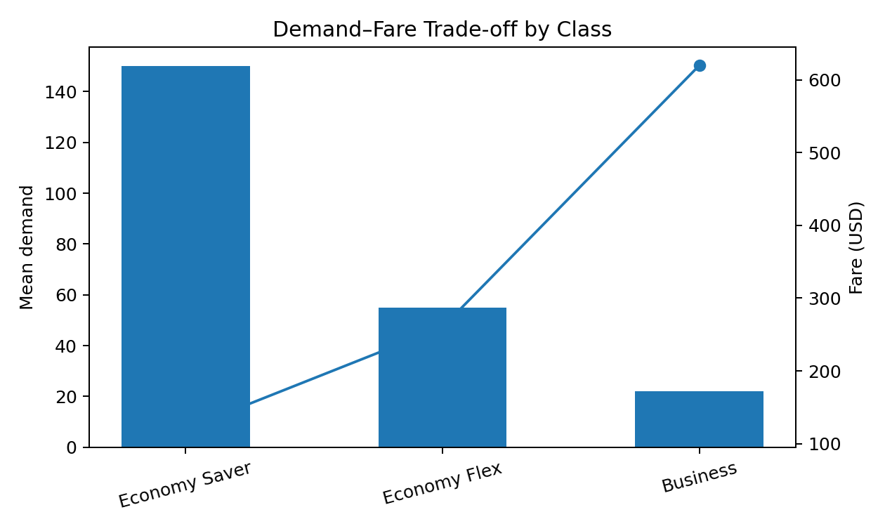
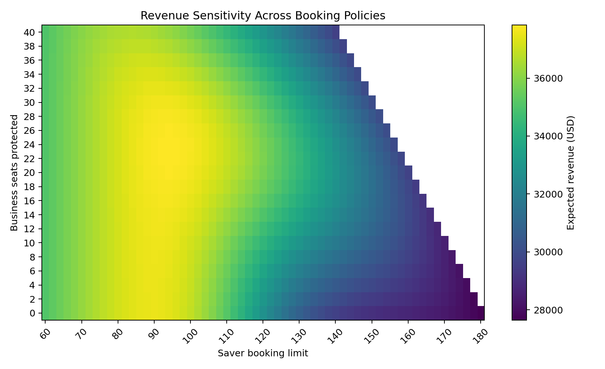
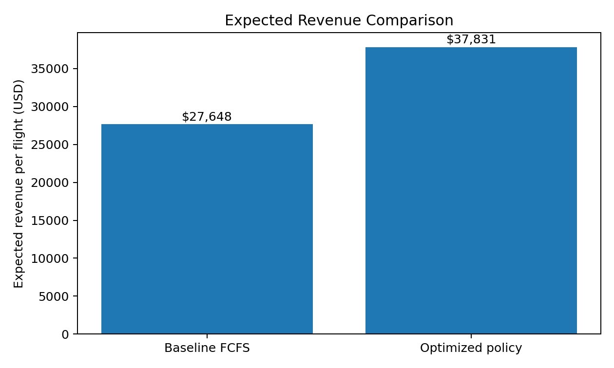
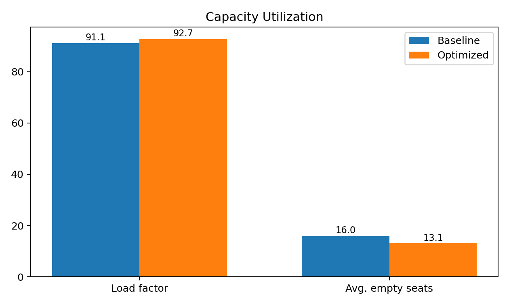

STRATEGY & ANALYTICS CASE STUDY
Airline Revenue
Optimization
A simulation-based revenue management project that balances low-fare volume with seat protection for higher-value passengers.
Aircraft capacity180
Fare classes3
Simulation runs30,000
Revenue uplift36.8%
01 / BUSINESS PROBLEM
How many seats should the airline protect for higher-paying passengers?
Airlines face a recurring trade-off: selling too many discounted tickets improves early load factor but may displace late-booking passengers who are willing to pay significantly higher fares. The objective is to define booking limits that maximize expected revenue while controlling empty-seat risk and denied high-value demand.
02 / INPUTS & ASSUMPTIONS
Demand and fare structure
| Fare class | Fare | Mean demand | Demand volatility | Commercial role |
|---|---|---|---|---|
| Economy Saver | $120 | 150 | 28 | Volume driver |
| Economy Flex | $260 | 55 | 14 | Mid-yield demand |
| Business | $620 | 22 | 8 | High-value late demand |


Transparency note: this is a synthetic benchmark designed to demonstrate the decision logic.
It does not represent confidential data from a real airline.
03 / METHOD
Monte Carlo simulation and booking-limit optimization
01Model demand distributions
→
02Simulate 30,000 flights
→
03Test booking limits
→
04Compare expected revenue
→
05Select best policy
First-Come-First-Served
Discounted demand can fill the aircraft before higher-fare demand arrives.
Booking Limits
The model caps Saver sales and protects seats for Business demand.
Stochastic Demand
Thousands of demand scenarios quantify revenue, spoilage and denied demand.
04 / RESULTS
Optimized policy improves revenue while preserving capacity discipline
| Metric | Baseline | Optimized | Change |
|---|---|---|---|
| Expected revenue per flight | $27,648 | $37,831 | +36.8% |
| Load factor | 91.1% | 92.7% | +1.6 pp |
| Average empty seats | 16.0 | 13.1 | -2.9 |
| Denied Business demand | 6.1 | 1.0 | -5.1 |


Best policy
Cap Saver sales at 94 seats and protect 24 seats for Business demand.
Revenue effect
The policy generates approximately 36.8% more expected revenue per flight than the baseline.
Management implication
Maximizing load factor alone can destroy value when higher-fare demand arrives later in the booking cycle.
05 / RECOMMENDATIONS
Recommended commercial actions
Executive conclusion
The analysis demonstrates that a simple booking-control policy can outperform a volume-first approach. The central strategic insight is that capacity should be allocated by expected marginal value, not merely by booking order.